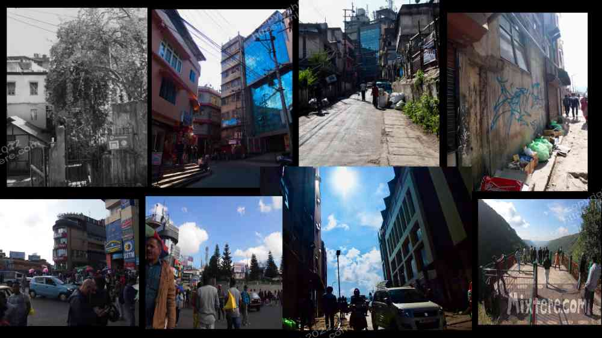
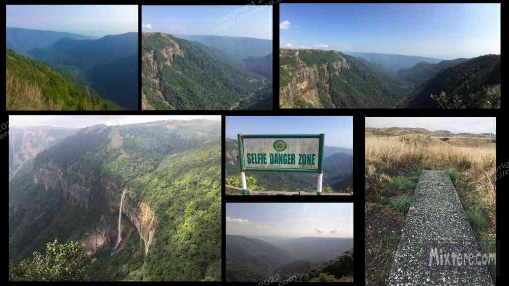

The images of waterfalls and lush greenery of Meghalaya that I had found on the internet called to me. It’s true that I would have had great regrets if I did not see some of the state. That said, I spent a week in Meghalaya and I don’t have a lot of good things to say about it. So I will keep this brief. From Guwahati I hopped on a shared van for the trip through the beautiful and lush landscape. I arrived with a jolt in Shilong, the capital. It's one of those unfortunate names for a city that courts ridicule if you know what I mean. I walked around its dumpy streets for hours but somehow a affordable accommodation evaded me. I eventually settled for a hole of a hotel not far from the city center. Cold air and moisture seeped through the filthy cinder block walls. It was the kind of accommodation that represents a prison, a place that only the desperate take. And I was that desperate soul. I spent as little time as I could in that dungeon. I tried to will the night to be over. It was a long one.
I reached out to Abhay, the Air Force man that had helped me on the train from Bodh Gaya to Guwahati. He was busy with work but would meet up with me in a few days. I tottered around the blighted town for a couple of days and found a few inexpensive places to eat and an actual coffee shop that served real coffee. That was probably the highlight of my visit. The people about the town were friendly enough, the place just had this rough, “industry meets the country with a slam” feel to it. And sprinkled about were ghettos, graffiti pieces, alcohol and palpable tribal gripes. Shillong had an edge to it and I sensed danger around each corner. Abhay arranged for me a tour car, a rattling Suzuki hatchback, to take me to some of the scenic spots I head read about. This was the only driver that would meet my budget. When arranging the driver Abhay took the driver aside and had a firm talking with him regarding the importance of my safety during the journey. He related to me later that he had told the man, “keep this tourist safe or else!” I was fortunate to have Abhay looking out for me. The US state department blasts warning about places with little restraint and so I was not sure what level of danger was about. But I didn't want to test my theory.
The tour in the suzuki left a lot to be desired. We stopped at a number of tourist spots involving striking views labeled as “selfie danger zones” due to the cliffs and cascading waterfalls. The falls were striking, but the tourist perched they were viewed from cheapened the experience. We also stopped at some craft tents and to tour a cave where I smacked my head against the ceiling. Fun. All along the road were half-baked tourist stops with hand made signs and dubiously crafted goods. Here I reflected on the exploitive aspects of tourism. In a place like this the tribal locals needed every financial opportunity that they could muster. So they exhibited their culture in an exploitive manner. And I, the tourist, was also exploited for the wealth in my pocket. But I did not feel good about what I was seeing or in helping to contribute to the exploitation of tribal culture for tourist amusement. I ended up cutting the tour short, not wanting to make any more stops.

On the way back I tried to make an online booking at a better hotel. I thought I had successfully done this until I showed the booking to the driver. He responded with dismay and said “Out area” with dismay. While he said this he ran his finger along his throat indicating the risk of my having my throat slit. Then I called Abhay and asked for help finding a hotel. He thought there would be many options but upon alighting back in Shilong hotel after hotel turned me down. They were not licensed or willing to take in the foreigner. So I ended up walking with my packs up and down the main street, over and over, up stairs to each hotel and then back down again. I was exhausted. I eventually returned to the only hotel that could accommodate me, which I had previously rejected due to their high price. But I didn’t have it in me to continue the search. My body had had enough.
So my stay in Shillong turned out to be brief but probably not brief enough. I turned tail back to Guwahati. By this point I was feeling officially done with my rugged explorations. I had given the untraveled path quite a go of it.
Right-click below to open in new tab

Click below for next chapter